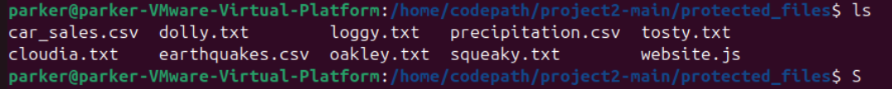
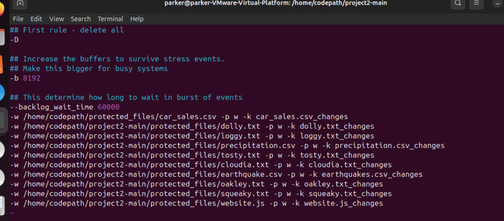
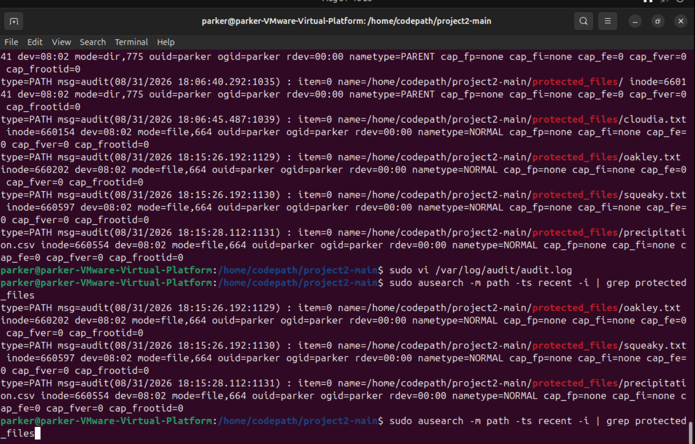

Incident response project focused on file attribution: configuring the Linux Audit daemon (auditd) to monitor a set of protected files, running simulated attack scripts against them, and using the resulting audit logs to determine exactly which attack modified which file. This is the same attribution work analysts perform after a real breach.
Objective
- Configure Audit rules to monitor write access to a set of protected files
- Run three unknown attack scripts that silently modify files in that protected set
- Use Audit logs to identify which files were altered and attribute each change to the correct attack
- Understand how file level audit trails support post-incident forensics and breach attribution

The 10 files sitting in protected_files before any rules were applied, four of these ended up being the ones the attacks actually touched.
Findings
Files modified by the attack scripts: Cloudia.txt, oakley.txt, squeaky.txt, precipitation.csv
| File | Attack |
|---|---|
| Cloudia.txt | attack-a |
| oakley.txt | attack-b |
| squeaky.txt | attack-b |
| precipitation.csv | attack-c |
Methodology
- Downloaded the starter project via
wgetand unzipped it in the home directory to keep filepaths consistent - Made the three attack scripts executable with
chmod u+x attack-a attack-b attack-c - Set up write-watch Audit rules (
auditctl -w) on each of the 10 files in/protected_files, giving each rule a unique filter key so its triggering events could be isolated later

The finished rule set, one -w line per file, each with its own filter key rather than one shared key across all ten.
- Restarted the Audit daemon (
sudo systemctl restart auditd) so the new rules took effect - Ran
./attack-a,./attack-b, and./attack-cto trigger the, at the time unknown, file modifications - Filtered the Audit event logs (
ausearch) by each rule's filter key to determine exactly which file each attack touched, and cross-referenced the process and executable name in each log entry back to the responsible attack script

Filtering ausearch output down to just the protected files confirmed exactly which four were touched and when.
Tools used
auditdandauditctl, configuring write-watch rules on protected filesausearch, filtering audit event logs by rule or filter key to attribute changes- Vim, editing audit rule files on the VM
Key takeaway
File integrity monitoring is how defenders prove what an attacker actually touched after a breach. Without an audit trail like this, you can confirm a system was compromised but not reconstruct what changed or who or what triggered it. The filter-key tagging approach used here mirrors how production security teams categorize audit rules by threat type, such as privilege escalation or data exfiltration, so findings can be triaged quickly. This kind of file level audit trail is also a hard requirement, not optional, under compliance frameworks like PCI-DSS and HIPAA.